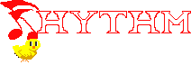

Use spacebar to start the game and play, and press it on the seventh beat!
Press R to restart the level.
Click here for fullscreen
Rhythm Doctor by 7th Beat Games Music & Level Design: Ladybug Translations: Satellite and Zisos